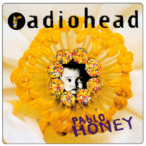

1985–1992
vorming en eerste jaren
he members of Radiohead met while attending Abingdon School
1992–1994
"Creep", Pablo Honey
in september, begon Radiohead aandacht te krijgen in de Britse muziekpers
1994-1995
The Bends

Radiohead begon in 1994 aan hun tweede album te werken met de ervaren Abbey Road Studios-producent John Leckie. De spanningen waren hoog, met toenemende verwachtingen om het succes van "Creep" te evenaren. Om een impasse te doorbreken, toerden Radiohead door Azië, Australazië en Mexico
1995-1998
OK computer

Radiohead bracht hun derde album, OK Computer, uit in mei 1997. Het vond dat de band experimenteerde met songstructuren en het opnemen van ambient-, avant-garde en elektronische invloeden
1998–2001
Kid A

Radiohead's vierde album, Kid A, werd uitgebracht in oktober 2000. Een afwijking van OK Computer, Kid A had een minimalistische en getextureerde stijl met meer diverse instrumentatie
2002-2006
Hail to the Thief en solowerk

Het zesde album van Radiohead, Hail to the Thief, werd uitgebracht in juni 2003. 89] De teksten werden beïnvloed door wat Yorke "het algemene gevoel van onwetendheid en intolerantie en paniek en domheid" noemde na de verkiezing van de Amerikaanse president. Na de Hail to the Thief-tour gingen Radiohead op pauze om tijd door te brengen met hun familie en aan soloprojecten te werken.
2006-2009
in rainbows

Radiohead bracht hun zevende album, In Rainbows, op 10 oktober 2007 zelf uit op hun website als download, voor elk bedrag dat gebruikers wilden
2009-2010
heruitgaven, singles en nevenprojecten
In 2009 vormde Yorke een nieuwe band, Atoms for Peace, om zijn solomateriaal uit te voeren, met muzikanten zoals Godrich en de bassist Flea van Red Hot Chili Peppers. Ze speelden acht Noord-Amerikaanse shows in 2010.
2017–2020
OKNOTOK

In juni 2017 bracht Radiohead een 20-jarig jubileum OK Computer heruitgave uit, OKNOTOK 1997 2017, bestaande uit een geremasterde versie van het album, B-kanten en niet eerder uitgebracht materiaal.
2021-2025
de Smile en zijprojecten
Radiohead heeft de plannen om in 2021 te toeren opgegeven vanwege de pandemie. Maar er is nu eindelijk terug sprake van een radiohead tour 2025 mzzr nog niet confirmed.